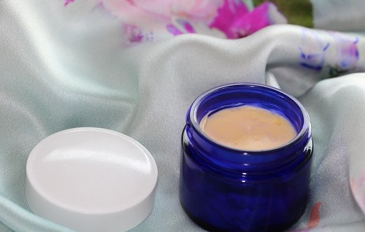

Puž, premda djeluje krhko i slabo je uspio preživjeti na zemlji više od 600 milijuna godina zahvaljujući svojoj nevjerojatnoj sposobnosti regeneracije. Ne tako davno, farmeri u Čileu koji su uzgajali puževe, otkrili su da im je koža mekša i infekcije
im prolaze iznenađujuće brzo bez ožiljaka, što je dovelo do otkrića, a danas i svjetske popularnosti, sekreta puža..
Krema od puža je prirodan proizvod za njegu kože dobiven od sekreta puža koji ima blagotvorne učinke na kožu. Sekret puža u kremi revitalizira i štiti kožu. Može pomoći u ubrzavanju prirodnog procesa zacjeljivanja i oporavka kože, regeneriranja te pomoći koži da se bori protiv infekcija.
Krema od puževa sekreta može se koristiti i za hidratizaciju jer pomaže u tretiranju i prevenciji nepovoljnih vanjskih uvjeta s kojima se naša koža suočava. Krema sadrži prirodne elemente: Alantoin, kolagen, elastin, glikolnu i hijaluronsku kiselinu, proteine, vitamine i peptide koji imaju svojstvo purifikacije. Ovi elementi u kombinaciji osiguravaju vašoj koži mnoštvo prirodnih elemenata koji mogu održati vašu kožu zdravijom, zategnutijom i pomoći u očuvanju mladolikog izgleda

Plaćanje se vrši pouzećem ili uplatom na žiro račun. Cijena kreme od 50mL jest 149kn. Cijena kreme od 100mL jest 249kn. Dostava na području Republike Hrvatske:
Za bilo kakve druge upite, molimo Vas da nam se obratite putem kontakata koji su gore navedeni.